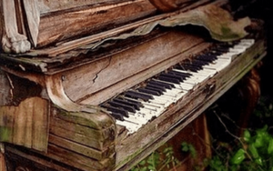
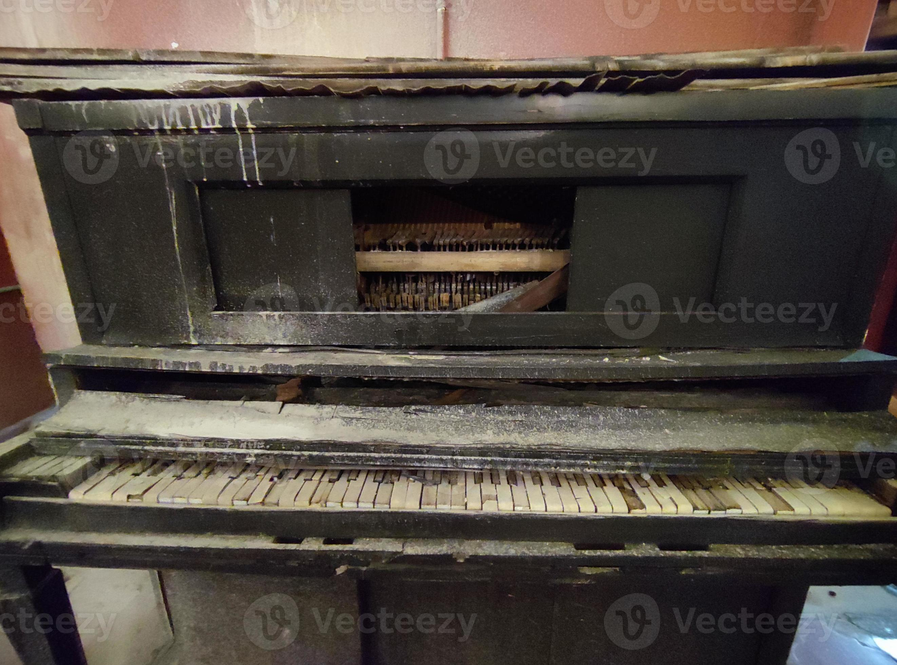
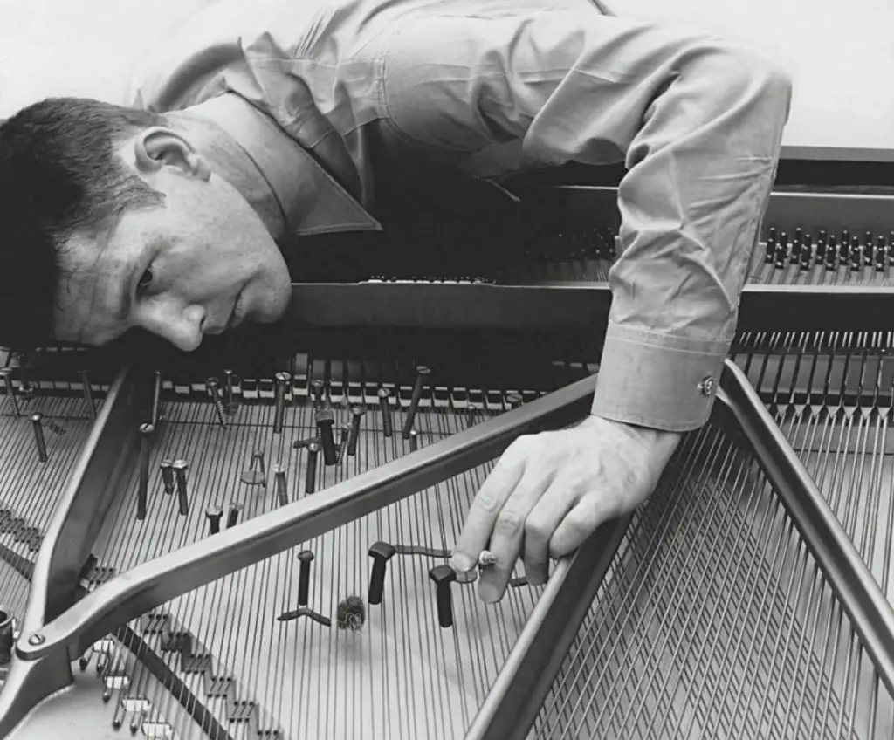

O piano é um instrumento musical de cordas percutidas que possui uma longa tradição na música ocidental, sendo amplamente utilizado em diversos gêneros, do clássico ao popular. A imagem mostra um piano de cauda, caracterizado pelo seu formato elegante e construção robusta, com uma tampa que pode ser aberta para amplificar o som. O piano de cauda destaca-se pela qualidade sonora superior e pelo controle dinâmico que oferece ao pianista, permitindo nuances delicadas e poderosas. Além do próprio instrumento, a imagem também exibe um banco acolchoado, fundamental para o conforto do músico durante longas sessões de prática ou apresentação. Tradicionalmente, os pianos são fabricados em madeira e possuem um conjunto de teclas pretas e brancas que, quando pressionadas, ativam martelos internos que tocam as cordas correspondentes, produzindo sons harmônicos e ricos. O piano é fundamental na formação musical, usado tanto para acompanhamento quanto para performance solo, e sua versatilidade o torna um dos instrumentos mais queridos e estudados no mundo da música.
Pianos abandonados no mato são uma triste e poética imagem do tempo e do esquecimento. A imagem mostra um piano velho, desgastado pelo tempo, com suas teclas amareladas e algumas faltando, evidenciando o abandono e a exposição às intempéries. A madeira rachada e coberta de musgo e sujeira revela a ação constante da natureza que, lentamente, se apodera do instrumento, antes símbolo de música, cultura e expressão artística. Ao redor, a vegetação cresce livremente, quase engolindo o piano, que parece resistir ao esquecimento, mas sucumbe à força silenciosa do mato. Esse cenário evoca uma sensação profunda de melancolia, como se a música tivesse parado de tocar para sempre ali, mas também de beleza e mistério, lembrando que, mesmo em ruínas, há histórias e emoções presentes, aguardando para serem redescobertas. O piano abandonado no mato é um símbolo do contraste entre a criação humana e a força inexorável da natureza selvagem.
Este piano, visivelmente abandonado e completamente fora de serviço, é um retrato pungente do desgaste do tempo e da falta de cuidado. Suas teclas, outrora brancas e negras, agora estão manchadas, quebradas e desalinhadas, algumas faltando completamente, revelando a fragilidade extrema da peça antiga. A estrutura de madeira está lascada e coberta por uma espessa camada de poeira, sujeira e detritos acumulados, demonstrando muitos anos de negligência total. A tampa frontal está parcialmente aberta, expondo os mecanismos internos corroídos e enferrujados, que parecem impossíveis de restaurar ao seu estado original. A pintura escura da superfície está desbotada e marcada por arranhões profundos, enquanto as partes de metal e madeira revelam claros sinais de deterioração severa e irreversível. Este instrumento, que antes servia para criar melodias e emoções profundas, hoje é um símbolo melancólico de decadência e abandono, evocando histórias esquecidas e tempos em que a música preenchia o ambiente com muita vida e harmonia.
Preparar um piano para um concerto é um processo meticuloso que exige atenção extrema aos detalhes, como exemplificado na imagem em preto e branco, onde um técnico está ajustando cuidadosamente o interior do instrumento. Na foto, o profissional examina as cordas e os mecanismos internos, utilizando uma ferramenta especializada para regular a tensão das cordas. Essa ação é fundamental para garantir que o piano esteja perfeitamente afinado e que cada nota soe clara e precisa durante a apresentação. O afinador posiciona seu ouvido próximo às cordas para captar nuances sonoras que apenas um especialista consegue perceber, buscando a harmonia ideal entre os tons graves, médios e agudos. A preparação envolve também a verificação de martelos, teclas e demais componentes, assegurando que o mecanismo responda com agilidade e uniformidade. Esse processo não é apenas técnico, mas artístico, pois o afinador deve compreender a sonoridade desejada pelo pianista e o estilo da peça a ser executada, adaptando a afinação e a regulagem para criar uma experiência sonora única e envolvente. Em suma, preparar um piano para um concerto é uma combinação delicada de ciência, sensibilidade auditiva e paixão pela música, cujo resultado final eleva a performance e emociona o público.